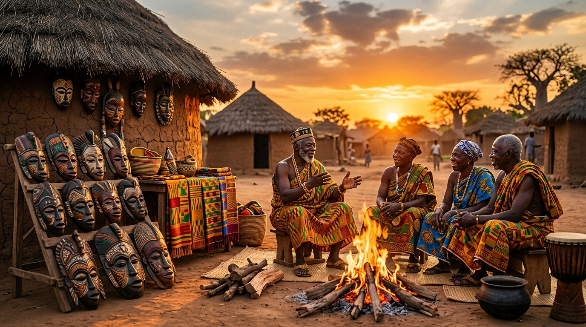
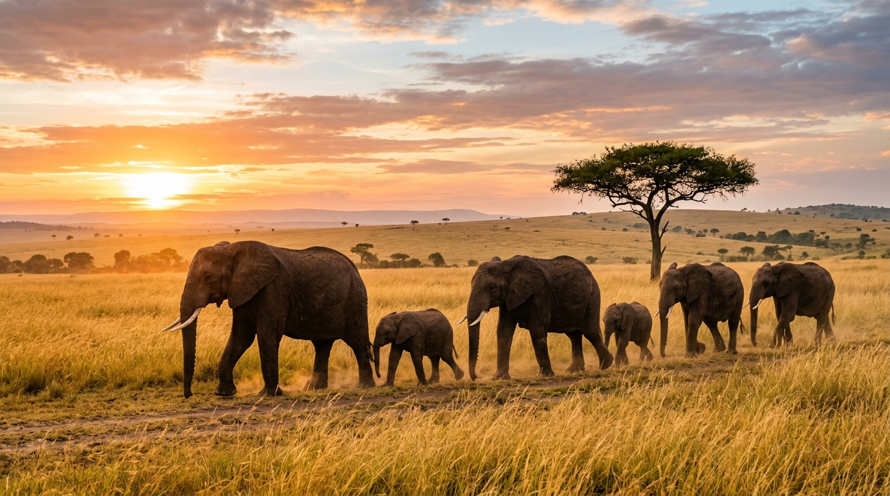
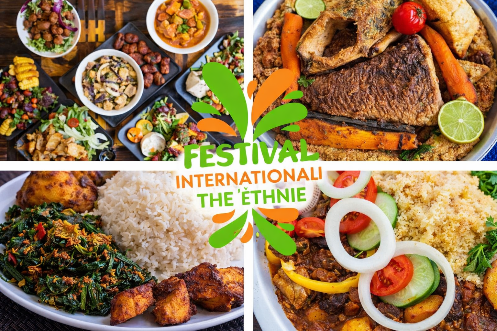
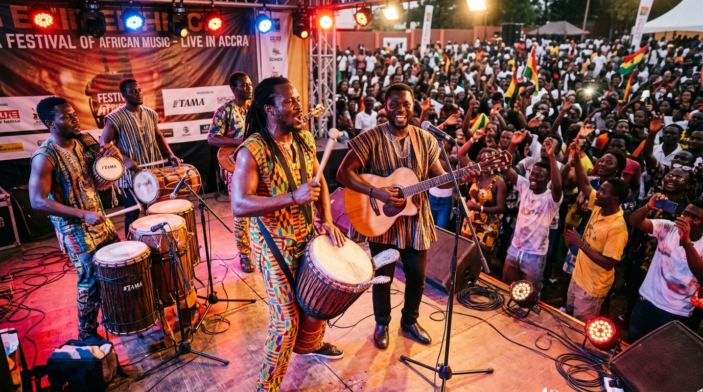
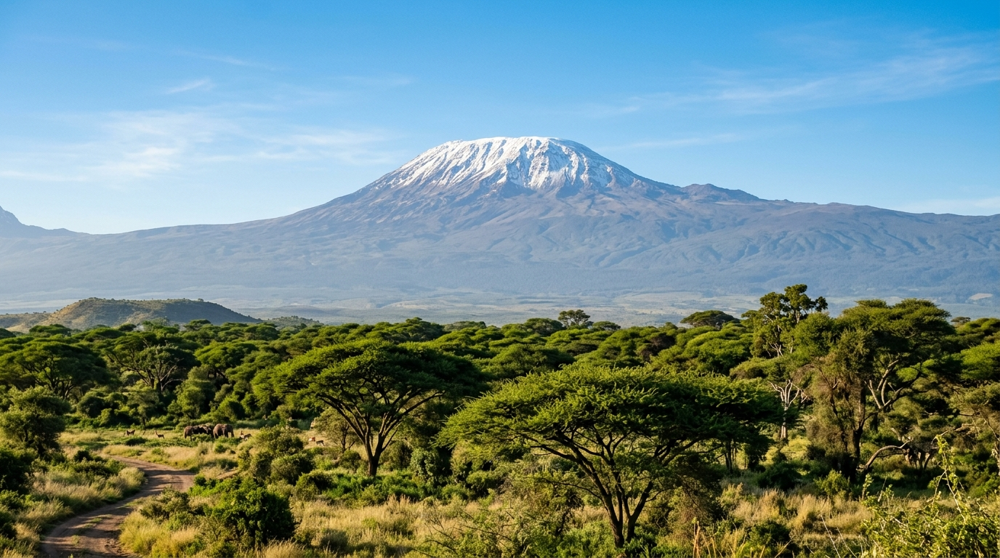
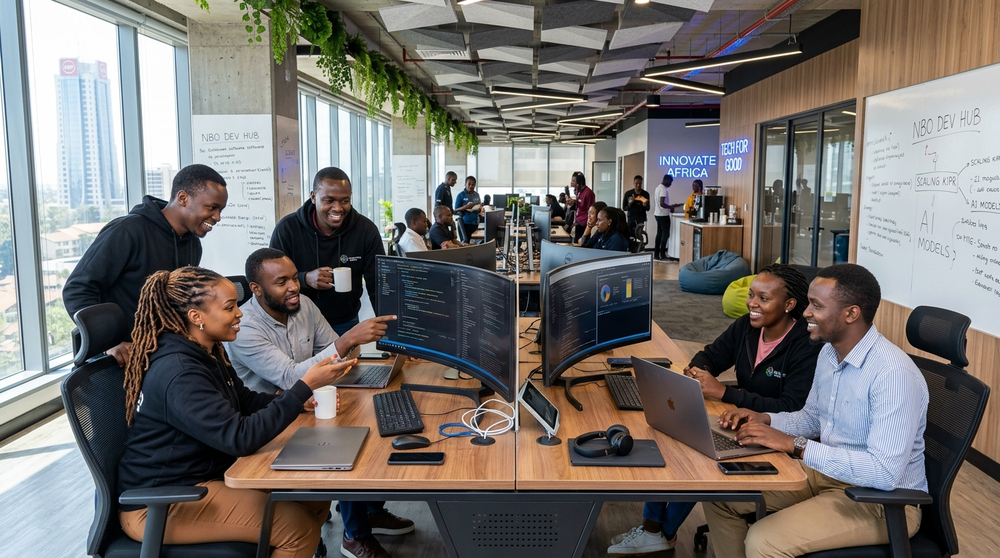
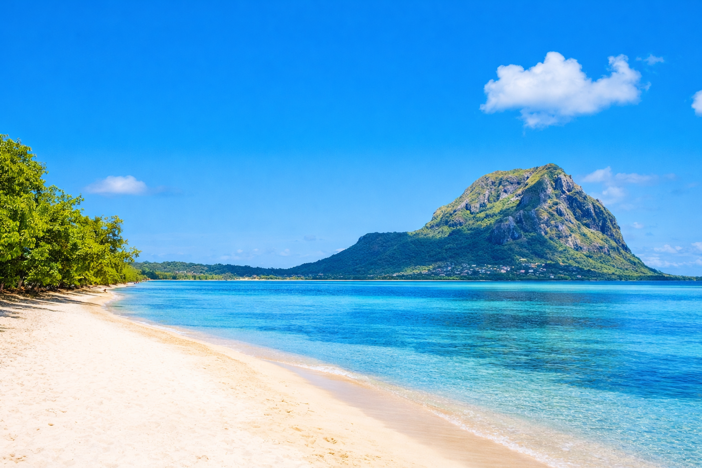
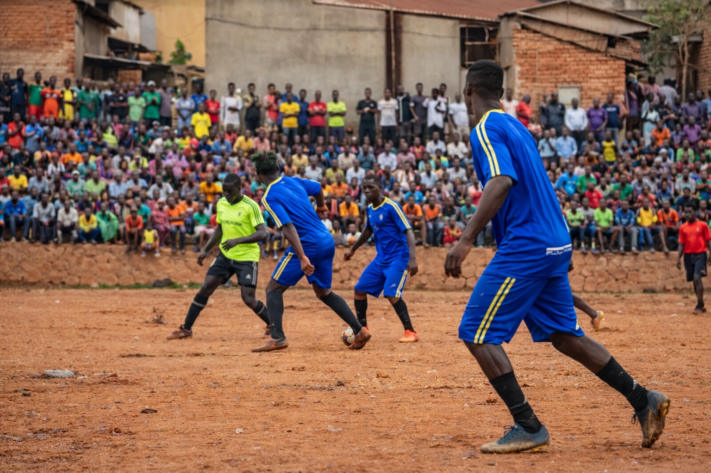

Culture & PatrimoineTrésors et traditions d'Afrique : Un patrimoine immatériel inestimable
Des contes des grands griots sous l'arbre à palabres aux sculptures royales et danses rituelles, découvrez l'âme vivante du continent.
Guides, récits et conseils pour préparer votre voyage en Afrique.

Culture & PatrimoineDes contes des grands griots sous l'arbre à palabres aux sculptures royales et danses rituelles, découvrez l'âme vivante du continent.

Faune & SafarisPartez explorer le Serengeti, le cratère du Ngorongoro et le delta de l'Okavango pour une immersion spectaculaire.

GastronomieDu Thiéboudienne du Sénégal au Jollof Rice nigérian, en passant par le Ndolé camerounais et les tajines du Maghreb.

Musique & ArtComment la créativité musicale africaine, de Kinshasa à Lagos et Johannesburg, fait vibrer les scènes de la planète.

Nature & PaysagesDu sommet enneigé du Kilimandjaro aux spectaculaires Chutes Victoria et dunes rouges du Namib, explorez des géants naturels.

Économie & TechPaiement mobile, énergies renouvelables et écosystème numérique : comment les entrepreneurs façonnent le futur.
 Mode & Artisanat
Mode & Artisanat
Découvrez l'art du dandyzme congolais avec la SAPE, les textiles d'exception comme le Kente et le Bogolan, et la haute couture.

Plages & ÎlesZanzibar, Maurice, les Seychelles et le Cap-Vert : conseils et secrets pour des vacances balnéaires d'exception.
 Histoire
Histoire
Une traversée passionnante à travers l'histoire du continent, des cités de Tombouctou aux murailles du Grand Zimbabwe.

SportsFerveur de la Coupe d'Afrique des Nations (CAN), suprématie des marathoniens et traditions de luttes ancestrales.